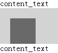
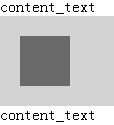

无
在 IE6 IE7 IE8(Q)下，容器触发 hasLayout 导致其左浮动子元素 'margin-bottom' 消失。
此问题导致的边距消失可能影响到页面的布局，如段落过于紧凑，甚至是文字重叠。
| IE6 IE7 IE8(Q) |
|---|
分析以下代码：
<span>content_text</span> <div style="zoom:1; overflow:hidden;
background:lightgrey;"> <div style="float:left; width:50px; height:50px; margin:20px;
background:dimgray;"></div> </div> <span>content_text</span>
测试代码中 DIV 容器内包含一个左浮动子元素，左浮动1元素宽度和高度均为50px，四个方向均有20px的边距。容器设置了 'zoom:1; overflow:hidden;'。
【注】：右浮动元素没有这个问题，很显然这是早期版本 IE 在布局计算中存在失误。
各浏览器表现如下：
| IE6 IE7 IE8(Q) | IE8(S) Chrome Safari Firefox Opera |
|---|---|
|  |  |
可见，
为容器显式地设置高度。若容器高度不定，则要避免在触发了 hasLayout 的容器内的浮动子元素上设置 'margin-bottom' 特性，可以通过为容器设置 'padding-bottom' 达到相似的效果。
只要不同时触发父元素hasLayout、子元素左浮动、左浮动子元素拥有非零的 margin-bottom 值，这三个条件中任意一项，均可解决此问题。
| 操作系统版本: | Windows 7 Ultimate build 7600 |
|---|---|
| 浏览器版本: |
IE6
IE7 IE8 Firefox 3.6 Chrome 4.0.302.3 dev Safari 4.0.4 Opera 10.60 |
| 测试页面: | RB1005.html |
| 本文更新时间: | 2010-07-22 |
float margin 浮动 hasLayout Block Formatting Context 清除